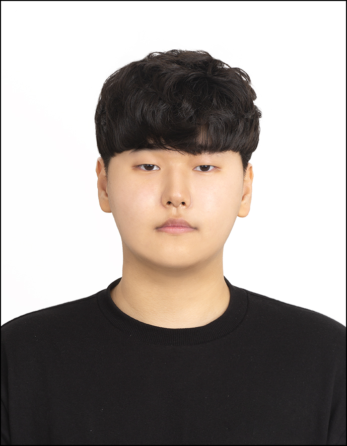

2023.03 — 2026.02
졸업
가천대학교 (글로벌)
Gachon University
미래자동차공학과 · Future Automotive Eng.
학점 / GPA
3.7 / 4.5
백엔드부터 프론트엔드까지 전 영역을 설계하는 풀스택 엔지니어. 대용량 데이터 파이프라인, 비동기 API, React · TypeScript 기반 프론트엔드까지 직접 설계하고 운영합니다. Pandas → Polars 전환으로 처리 시간 70% 단축, 3개 클라이언트를 단일 FastAPI 게이트웨이로 통합.

"구조를 설계하고 흐름을 잇고,
안 해본 건 배워서 끝내는 빌더형 엔지니어"
공공 데이터 플랫폼에서 대용량 CSV 가공 API와 비식별 처리 파이프라인을 설계·운영했습니다. Pandas → Polars 전환과 병목 제거로 100~500MB CSV 처리 시간을 5분 → 1분 30초로, 비식별 처리를 3분 → 1분으로 단축했습니다.
Flask 동기 구조를 FastAPI 비동기 아키텍처로 전환하고, RabbitMQ · Celery · Docker 기반 워커 환경을 직접 구성했습니다. PostgreSQL 복합·부분·GiST 인덱스 설계로 핵심 쿼리 80~90% 단축, Index Scan 100%를 달성했습니다.
현재는 베트남 반려동물 플랫폼 Pet On Way를 풀스택으로 개발 중입니다. React + TypeScript로 Zalo Mini App · 병원 어드민 · 플랫폼 어드민 3개 프론트엔드를, FastAPI로 단일 게이트웨이 백엔드를 직접 설계하고 있습니다. Agora 화상진료, ZaloPay 결제, RBAC 멀티 테넌트 구조까지 전 영역을 담당합니다.
최근에는 Milvus · text-embedding-3-small 기반 사내 문서 RAG 어시스턴트와 Asterisk 기반 AI 보이스 에이전트를 직접 설계하며 검색·LLM 영역으로 범위를 넓히고 있습니다. 프레임워크 의존 없이 청킹 → 임베딩 → 벡터 검색 → 생성 파이프라인을 전 과정 직접 제어하고, function calling으로 RAG와 보이스 에이전트를 연동했습니다.
Zalo Mini App, 병원 어드민, 플랫폼 어드민 SPA 3종을 React + TypeScript + Vite로 직접 설계. TailwindCSS, react-i18next 다국어, lazy loading · skeleton UI 적용.
FastAPI 비동기 구조, MSA API Gateway 패턴, RBAC + JWT, RabbitMQ · Celery 큐 기반 워커 분리, Docker Compose 멀티 컨테이너 운영.
Polars 기반 대용량 CSV 처리, 벡터화·병렬처리, PostgreSQL 복합·부분·GiST 인덱스로 핵심 쿼리·가공 작업 70~90% 단축.
Jenkins · GitHub · Docker 기반 빌드/배포 자동화, Airflow DAG ETL 스케줄링, AWS S3 · Azure 클라우드 실전 운영.
Milvus · text-embedding-3-small 기반 의료 도메인 RAG 풀스택 구현, 환각 제로 한국어 콜센터 프롬프트 설계, Asterisk 보이스 에이전트에서 통화 중 function calling으로 RAG 호출·음성 응답, RAGAS 검색·답변 품질 평가까지 운영.